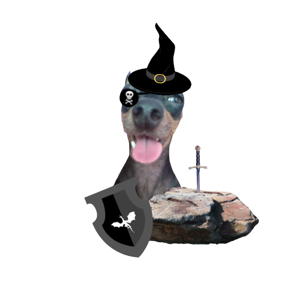

— Olá guerreiro, eu sou Tyrion Dragomir Lannister, domador de felinos selvagens!
— Estou vagando por essas terras faz muito tempo, meu tamanho e minha pelagem ajudam na minha camuflagem
mas com você grandão, as coisas podem ficar difíceis! Não é?
Mas não desanime meu caro, vossa senhoria prometeu sua alma ao embarcar nessa missão,
junte-se a mim na jornada do coração valente!
